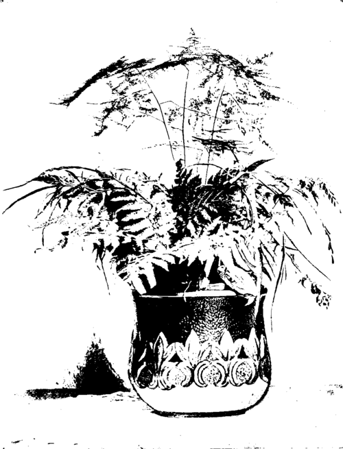

II. Pots And Saucers
Description
This section is from the book "Indoor Gardening", by Eben E. Rexford. Also available from Amazon: Indoor Gardening.
II. Pots And Saucers
WHILE the ordinary clay pot is doubtless as satisfactory as anything that can be used to grow plants in, all things considered, I would not say the severe things against glazed pots that many writers on floriculture do. These have been condemned as positively harmful but I have failed to find them so. The injurious effects charged to them I believe were due to other causes. In the greenhouse, where the air is kept constantly moist, a pot porous enough to allow moisture to evaporate freely from the soil is, no doubt, the proper thing to use. But in the living-room, where the air is more or less dry, I consider a glazed pot not at all objectionable, since its glazing interferes with the too rapid evaporation that would naturally take place in a room pretty sure to be overheated. We often see fine plants growing in old tin cans, noseless pitchers, and other articles of pottery 21 glazed outside and in, and I am of the opinion that they do better in them, in the dwelling, than they would in unglazed pots, because the moisture of the soil is retained much longer, therefore there is less danger of injury from lack of attention. The ordinary unglazed pot is certainly not an object of beauty, at its best. It often becomes discolored and slimy from exudation of moisture, and when this takes place it is a menace to the plant in it, as this slime may contain the germs of a disease that can be communicated to the plant through its roots. If good drainage is provided, there is never any danger of injury by overwatering. This being the case, I consider that it matters very little about the porosity of the vessel containing the plant. If the surface of the soil is kept open air will be admitted to the roots in sufficient quantities to meet the requirements of the plants, and in a soil from which all surplus water drains away readily, and into which enough air enters to keep it sweet, any plant can be grown satisfactorily, under favorable conditions.
Not all plants require pots of the same shape. Some send their roots down deep into the soil without spreading much at the surface, or below. These should be given deep pots. Others throw out a root-system which never goes far below the surface. For these shallow pots are best. Study the characteristics of your plant in this respect, and endeavor to give them pots suited to their peculiarities.
Fern's And Asparagus.
Hanging plants in the living-room certainly do best in glazed pots, because the temperature in which they are suspended is always several degrees higher than that at the window-sill, and consequently evaporation takes place much more rapidly. Were porous pots to be used, from whose sides moisture could pass off, as well as from the surface of the soil, it would be necessary to apply water much oftener than is the case where evaporation can take place from the surface only.
The fact is, it matters much less what kind of a vessel a plant is grown in than most persons imagine. I have seen as fine plants growing in an old wooden box as I ever saw in anything. It is the soil, and the care given, that counts most of all. Therefore if you dislike the appearance of the ordinary pot, use glazed ones-use anything that happens to be convenient-but be sure to provide what you do use with facilities for proper drainage. This is of the utmost importance. Overlook it and no matter what kind of a pot your plant is in, the soil will soon sour because of stagnant water in it. In such cases, you will be responsible for the trouble,-not your glazed pot. Proper drainage is the safety-valve upon which the grower of plants in house or greenhouse must depend for protection against most of the ills originating at their roots.
The best clay pots are of a light cream color. The red ones soon crumble, like brick, under the continued effect of moisture.
There is a combined pot and saucer on the market which would be an improvement over the old pot and its separate saucer if better facilities for drainage were provided. As it is, there are but two small holes at the junction of pot and saucer, and these, being on the sides, soon become clogged, and surplus water is dammed back, the consequence of which is extremely unfortunate for your plants. If these holes were larger, they would allow water to escape as freely as from the ordinary pot with a hole in its bottom, but, for some unexplainable reason, the makers refuse to make this improvement, and, as a result, the combined pot and saucer is not much used. The advantage of a pot always provided with a saucer, and of a saucer not easily broken, will be readily understood by those who have had some experience with the detached saucer.
There has, of late, been introduced a saucer of fibre-ware. This is wood-pulp^ compressed and prepared by some peculiar process that makes it practically indestructible. It is perfectly impervious to the action of water. These saucers are very light, quite attractive in appearance, and can be used on the most finely polished furniture without the least danger of scratching it, so smoothly are they finished. As soon as the merits of this article become known, it will, I am confident, come into general use. It is to be hoped that we may soon have pots of the same material.
Stands of fibre-ware for large plants in tubs are already in extensive use. These are really large saucers, fitted with casters, which make it an easy matter to move plants too heavy to be lifted about by one person. All who own large specimens of Oleander, Palm, or other plants requiring tubs or large pots, ought to provide themselves with stands of this kind. Being raised above the floor by their casters, the carpet or rug is protected from dampness or the creasing of heavy plant-tubs. This, in itself, will prove a weighty argument with the woman who does not like to have her floors or their covering disfigured, and the ease with which large plants can be moved about will readily convince any one of their great value.
Continue to: